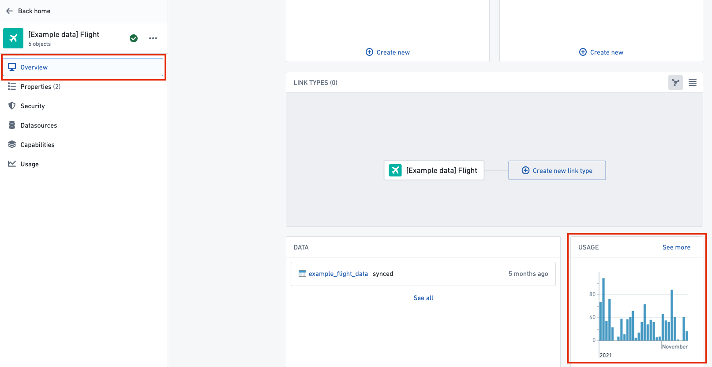
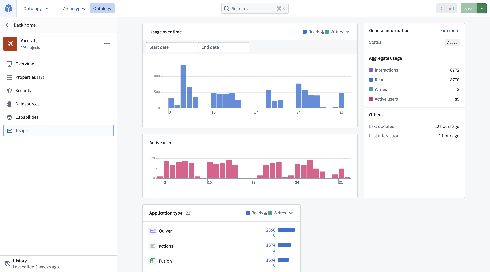

Ontology metrics
The Ontology Manager can be configured to show usage metrics for object types and link types.
Key terminology
- Reads: A read is recorded when an application loads objects for a specified object type. This can include displaying objects in a table in Workshop, returning all objects from search for a given object type, aggregating a property on an object type, and so on. Note that one read represents one load request from Object Storage v1 (Phonograph) or the Object Set Service (OSS). Many objects loaded or aggregated at once will only be recorded as a single read. Also note that any object type or link type usage happening in Ontology Manager is not included.
- Writes: A write is recorded when an application makes edits to objects of this type as the result of an Action, Function, Foundry Form, direct Object Explorer edit, or API call. Note that one write represents one edit request sent to Object Storage v1 (Phonograph). Many objects edited in bulk at once will only be recorded as a single write.
- Interactions: The total number of reads and writes on objects of this type over the last 30 days.
- Active users: The number of unique user IDs that triggered the reads and writes recorded over the last 30 days.
Viewing usage
There are two places in the Ontology Manager to view object type and link type usage:
- A usage graph on the Overview tab: High-level summary of usage over the last 30 days, enabling Ontology users to quickly understand the implications of making a breaking change to this resource.

:::callout{theme="warning" title="Warning"}
If you see âNo usage for the last 30 daysâ in the usage graph when you would expect to see usage statistics, then it is possible that internal tables may not have been configured. Contact your Palantir representative for more information.
:::
- A dedicated Usage tab: Detailed usage metrics for resources. Users can see, over the last 30 days, who has used each object type, when, and in which Foundry applications. The feature is intended to help Ontology users make Ontology changes more safely by providing a clearer understanding of a change's impact. The Usage tab can also be accessed by clicking See more on the usage graph in the Overview tab.

Enabling Ontology usage
Usage on the Overview tab and detailed usage metrics in the Usage tab are configured from the Ontology settings tab in Control Panel using the Ontology metrics toggle. This toggle can only be enabled or disabled by Ontology administrators and changes may take up to 60 minutes to take effect in Ontology Manager.
Shared Ontology usage
If your organization shares an Ontology with another organization, then the Usage tab will be accessible by users of all organizations that have the Ontology metrics turned on. The usage metrics displayed only includes the usage from users who have access to the object type and those who are from organizations that have the Ontology metrics enabled. See the steps outlined in Enabling Ontology usage for more information.